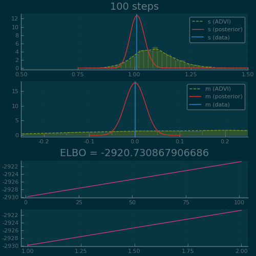
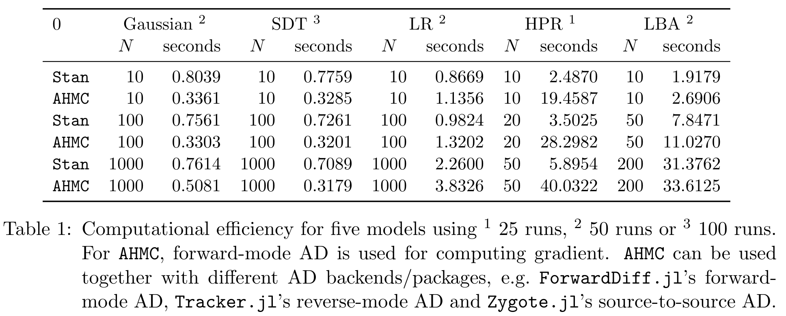
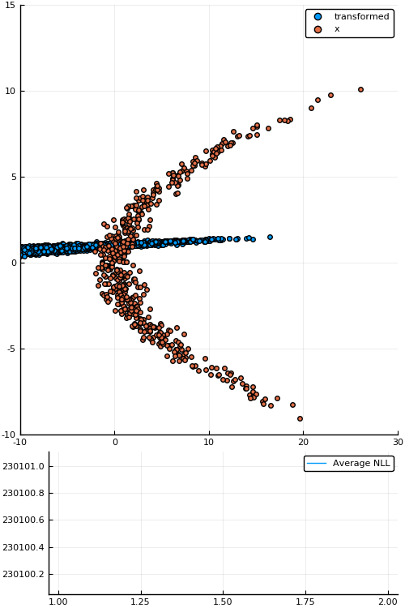
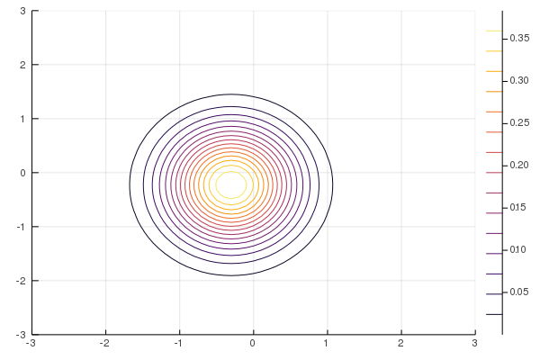
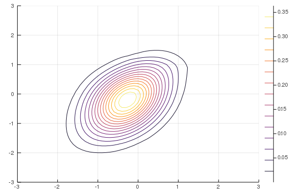
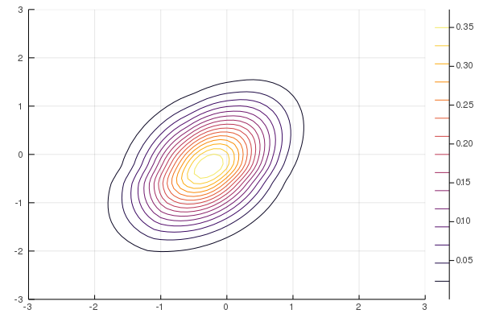

Turing.jl and Bijectors.jlTuring.jl on a simple example
Bijectors.jl:
Frequentist
A single point as the estimate of \(\theta\) is good enough.
Bayesian
But we have finite data! And this dataset just happen to give you the one and only \(\theta\)?!
No, no, no, we need a distribution over the \(\theta\) given the data (a posterior):
\begin{equation*} p\big(\theta \mid \left\{ x_i \right\}_{i = 1}^n\big) \end{equation*}
Bayes' rule gives us
or, since the denominator is constant,
For the family of inference methods known as Markov Chain Monte-Carlo (MCMC), this proportional factor is all we need.
using Pkg; Pkg.activate(".")
using Plots, StatsPlots
using Bijectors
using Turing
Disclaimer: All functionality in this talk is not yet available on the master branch of Bijectors.jl, but should be soon™.
versioninfo()
Julia Version 1.1.1 Commit 55e36cc308 (2019-05-16 04:10 UTC) Platform Info: OS: Linux (x86_64-pc-linux-gnu) CPU: Intel(R) Core(TM) i5-7200U CPU @ 2.50GHz WORD_SIZE: 64 LIBM: libopenlibm LLVM: libLLVM-6.0.1 (ORCJIT, skylake)
Turing.jl
Turing.jlis a (universal) probabilistic programming language (PPL) in Julia.
What does that even mean?
In mathematical notation:
In Turing.jl:
@model model(x) = begin
s ~ InverseGamma(2, 3)
m ~ Normal(0.0, √s)
for i = 1:length(x)
x[i] ~ Normal(m, √s)
end
end
Generate some fake data and instantiate the model
xs = randn(1_000)
m = model(xs)
Now sample to obtain posterior \(p\big(m, s \mid \left\{ x_i \right\}_{i = 1}^n \big)\)
# Sample 1000 samples using HMC
samples_nuts = sample(m, NUTS(10_000, 200, 0.65));
Aaaand we can plot the resulting (empirical) posterior
plot(samples_nuts[[:s, :m]])
Might be happy with an approximation to your posterior \(p \big( \theta \mid \left\{ x_i \right\}_{i = 1}^n \big)\).
Variational inference (VI) is an approximate approach which formulates the problem as an optimization problem:
where
Caveat: usually assume \(\mathscr{Q}\) is the family of Gaussians with diagonal covariance.
(Mean-field) ADVI is a simple but flexible VI approach that exists in Turing.jl
# "Configuration" for ADVI
# - 10 samples for gradient estimation
# - Perform 15 000 optimization steps
advi = ADVI(10, 15_000)
# Perform `ADVI` on model `m` to get variational posterior `q`
q = vi(m, advi)
To sample and compute probabilities
xs = rand(q, 10)
logpdf(q, xs)

Figure 2: ADVI applied to the Normal-InverseGamma generative model from earlier. Disclaimer: this plot is generated by writing the optimization loop myself rather than using the simple vi(m, advi) call. See test/skipped/advi_demo.jl in Turing.jl for the code used.
HMC
Bijectors.jlA bijector or diffeomorphism is a differentiable bijection \(b\) with a differentiable inverse \(b^{-1}\).
For example \(b(x) = \exp(x)\)
So \(\exp\) (and \(\log\)) is a bijector!
In Bijectors.jl
using Bijectors; using Bijectors: Exp, Log
b = Exp()
b⁻¹ = inv(b)
b⁻¹ isa Log
true
We can evaluate a Bijector
x = 0.0
b(x) == 1.0 # since e⁰ = 1
true
We can compose bijectors to get a new Bijector
(b ∘ b) isa Bijector
true
And evaluate compositions of bijectors
(b⁻¹ ∘ b)(x) == x
true
What about more complex/deeper compositions?
cb = b ∘ b ∘ b
cb⁻¹ = inv(cb) # <= inversion of a "large" composition
(cb⁻¹ ∘ cb)(x) == x
true
We'll see later that of particular interest is the term
Which works seamlessly even for compositions
logabsdetjac(cb, x)
3.718281828459045
Consider
Or, equivalently,
d1 = Normal(1.0, 5.0) # 𝒩(1, 5)
xs = rand(d1, 100_000)
d2 = Normal(0.0, 1.0) # 𝒩(0, 1)
ξ = rand(d2, 100_000)
ys = 1.0 .+ ξ .* 5.0 # y ~ 𝒩(1, 5)
density(xs, label = "d1", linewidth = 3)
density!(ys, label = "d2", linewidth = 3)
Bijector + Distribution = another Distribution
using Bijectors: Shift, Scale
# Define the transform
b = Shift(1.0) ∘ Scale(5.0) # => x ↦ 1.0 + 5.0x
td = transformed(Normal(0.0, 1.0), b) # => 𝒩(1.0, 5.0)
Moreover, td is a TransformedDistribution and
td isa Distribution
true
Yay!
y = rand(td)
# Ensure we have the same densities
logpdf(td, y) ≈ logpdf(d1, y)
true
x_range = -14.0:0.05:16.0
plot(x_range, x -> pdf(Normal(1.0, 5.0), x), label = "d1", linewidth = 4, linestyle = :dash)
plot!(x_range, x -> pdf(td, x), label = "td", linewidth = 4, alpha = 0.6)
Figure 5: Density of \(\mathcal{N}(0, 1)\) transformed by \(\xi \mapsto 1 + 5\xi\) (labeled td) and \(\mathcal{N}(1, 5)\) (labeled d1).
Great; just another way to draw samples from a normal distribution…
Or is it?
using Random; Random.seed!(10); # <= chosen because of nice visualization
d = MvNormal(zeros(1), ones(1))
# "Deep" transformation
b = (
RadialLayer(1) ∘ RadialLayer(1) ∘
RadialLayer(1) ∘ RadialLayer(1)
)
td = transformed(d, b)
# Sample from flow
xs = rand(td, 10_000)
x_range = minimum(xs):0.05:maximum(xs)
lps = pdf(td, reshape(x_range, (1, :))) # compute the probabilities
histogram(vec(xs), bins = 100; normed = true, label = "", alpha = 0.7)
xlabel!("y")
plot!(x_range, lps, linewidth = 3, label = "p(y)")
That doesn't look very normal, now does it?!
It turns out that if \(b\) is a Bijector, the process
induces a density \(\tilde{p}(y)\) defined by
Therefore if we can compute \(\mathcal{J}_{b^{-1}}(y)\) we can indeed compute \(\tilde{p}(y)\)!
But is this actually useful?
One might consider constructing a parameterised Bijector \(b_{\phi}\).
Given a density \(p(x)\) we can obtain a parameterised density
\(b_{\phi}\) is often referred to as a normalising flow (NF)
Can now optimise any objective over distributions, e.g. perform maximum likelihood estimation (MLE) for some given i.i.d. dataset \(\left\{ y_i \right\}_{i = 1}^n\)
Consider an Affine transformation, i.e.
for matrix \(W\) and vector \(b\),
and a non-linear (but invertible) activation function, e.g. LeakyReLU
for some non-zero \(\alpha \in \mathbb{R}\) (usually chosen to be very small).
Can define a "deep" NF by composing such transformations! Looks familiar?
Yup; it's basically an invertible neural network! (assuming \(\det W \ne 0\))
layers = [LeakyReLU(α[i]) ∘ Affine(W[i], b[i]) for i = 1:num_layers]
b = foldl(∘, layers)
td = transformed(base_dist, b) # <= "deep" normalising flow!

Figure 7: Empirical density estimate (blue) compared with single batch of samples (red). Code can be found in scripts/nf_banana.jl.
| Operation | Method | Automatic |
|---|---|---|
| \(b \mapsto b^{-1}\) | inv(b) |
\(\checkmark\) |
| \((b_1, b_2) \mapsto (b_1 \circ b_2)\) | b1 ∘ b2 |
\(\checkmark\) |
| \((b_1, b_2) \mapsto [b_1, b_2]\) | stack(b1, b2) |
\(\checkmark\) |
| \((b, n) \mapsto b^n := b \circ \cdots \circ b\) (n times) | b^n |
\(\checkmark\) |
| Operation | Method | Automatic |
|---|---|---|
| \(x \mapsto b(x)\) | b(x) |
\(\times\) |
| \(y \mapsto b^{-1}(y)\) | inv(b)(y) |
\(\times\) |
| \(x \mapsto \log \lvert\det \mathcal{J}_b(x)\rvert\) | logabsdetjac(b, x) |
AD |
| \(x \mapsto \big( b(x), \log \lvert \det \mathcal{J}_b(x)\rvert \big)\) | forward(b, x) |
\(\checkmark\) |
| Operation | Method | Automatic |
|---|---|---|
| \(p \mapsto q:= b_* p\) | q = transformed(p, b) |
\(\checkmark\) |
| \(y \sim q\) | y = rand(q) |
\(\checkmark\) |
| \(p \mapsto b\) s.t. \(\mathrm{support}(b_* p) = \mathbb{R}^d\) | bijector(p) |
\(\checkmark\) |
| \(\big(x \sim p, b(x), \log \lvert\det \mathcal{J}_b(x)\rvert, \log q(y) \big)\) | forward(q) |
\(\checkmark\) |
Bijectorusing StatsFuns: logit, logistic
struct Logit{T<:Real} <: Bijector{0} # <= 0-dimensional, i.e. expects `Real` input (or `Vector` which is treated as batch)
a::T
b::T
end
(b::Logit)(x) = @. logit((x - b.a) / (b.b - b.a))
# `orig` contains the `Bijector` which was inverted
(ib::Inversed{<:Logit})(y) = @. (ib.orig.b - ib.orig.a) * logistic(y) + ib.orig.a
logabsdetjac(b::Logit, x) = @. - log((x - b.a) * (b.b - x) / (b.b - b.a))
julia> b = Logit(0.0, 1.0)
Logit{Float64}(0.0, 1.0)
julia> y = b(0.6)
0.4054651081081642
julia> inv(b)(y)
0.6
julia> logabsdetjac(b, 0.6)
1.4271163556401458
julia> logabsdetjac(inv(b), y) # defaults to `- logabsdetjac(b, inv(b)(x))`
-1.4271163556401458
julia> forward(b, 0.6) # defaults to `(rv=b(x), logabsdetjac=logabsdetjac(b, x))`
(rv = 0.4054651081081642, logabsdetjac = 1.4271163556401458)
Consider \(L = \begin{pmatrix} 10 & 0 \\ 10 & 10 \end{pmatrix}\) and
In Turing.jl
using Turing
L = [
10 0;
10 10
]
@model demo(x) = begin
μ ~ MvNormal(zeros(2), ones(2))
for i = 1:size(x, 2)
x[:, i] ~ MvNormal(μ, L * transpose(L))
end
end
Generate n = 100 samples with true mean μ = [0.0, 0.0]
# Data generation
n = 100
μ_true = 0.5 .* ones(2) # <= different from original problem
likelihood = MvNormal(μ_true, L * transpose(L))
xs = rand(likelihood, n)
Figure 8: True posterior

Figure 9: MF-ADVI

Figure 10: NF-ADVI (rational-quadratic)

Figure 11: NF-ADVI (affine)
k ice-cream parlours on a beachGenerative model is
where \(f\) maps the location to some probability vector.
Figure 12: Beach plot. locations (yellow) refer to samples from the location prior (density estimated using normalising flow). The blue part represents the sea, and the black part represents land which is not part of the beach so we don't care about it.
Figure 13: Beach prior. 6-layer NF with Affine and LeakyReLU as seen in animation from before.
Generate fake data (most people buy from Parlour #1)
fake_samples = [1, 2, 1, 1, 1, 1, 1, 2, 2, 1, 2, 1, 1, 2, 2, 1]
num_fake_samples = length(fake_samples)
Define a Model which uses a NF as prior
@model napkin_model(x, ::Type{TV} = Vector{Float64}) where {TV} = begin
locs = Vector{TV}(undef, length(x))
for i ∈ eachindex(x)
# We sample from the original distribution then transform to help NUTS.
# Could equivalently have done `locs[i] ~ td` but more difficult to sample from.
locs[i] ~ td.dist
loc = td.transform(locs[i])
# Compute a notion of "distance" from `loc` to the two different ice-cream parlours
d1 = exp(- norm(parlour1 - loc))
d2 = exp(- norm(parlour2 - loc))
# The closer `loc` is to a ice-cream parlour, the more likely customer at `loc`
# will buy from that instead of the other.
πs = [d1 / (d1 + d2), d2 / (d1 + d2)]
x[i] ~ Categorical(πs)
end
end
Bayesian inference time
# Instantiate model
m = napkin_model(fake_samples)
# Sample using NUTS
num_mcmc_samples = 10_000
mcmc_warmup = 1_000
samples = sample(m, NUTS(mcmc_warmup, 0.65), num_mcmc_samples);
Figure 14: Beach posterior.
Guaranteed great success.
A couple of years later you're probably already in the business of bribing politicians to reduce worker-benefits for napkin-salesmen.
TuringLang (website): https://turing.mlTuringLang (Github): https://github.com/TuringLangTuring.jl (Github): https://github.com/TuringLang/Turing.jlBijectors.jl (Github): https://github.com/TuringLang/Bijectors.jl